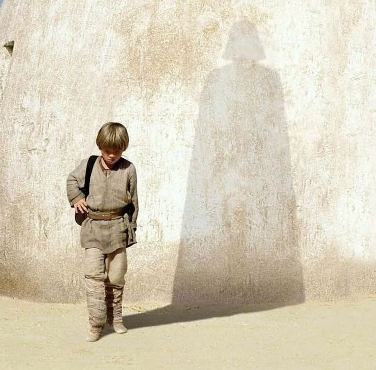
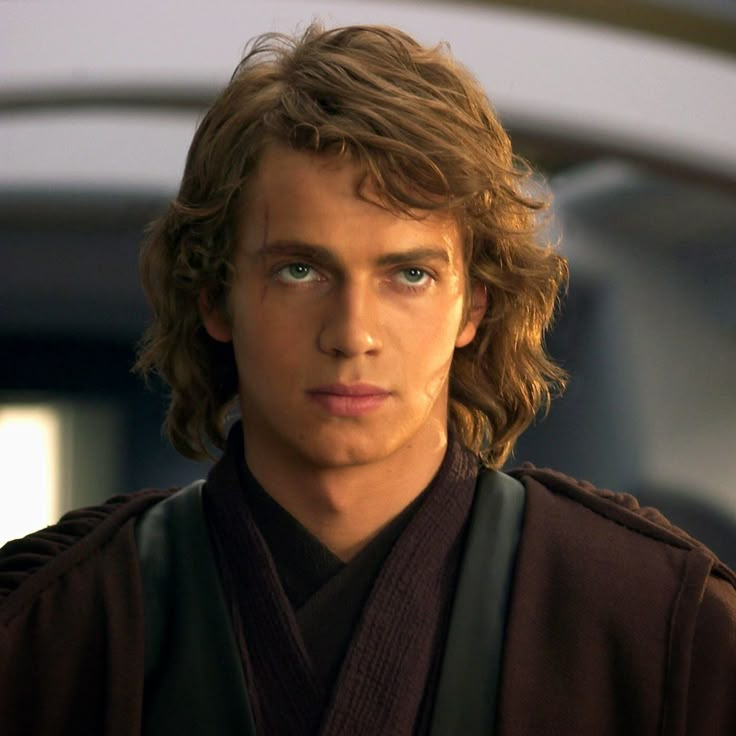
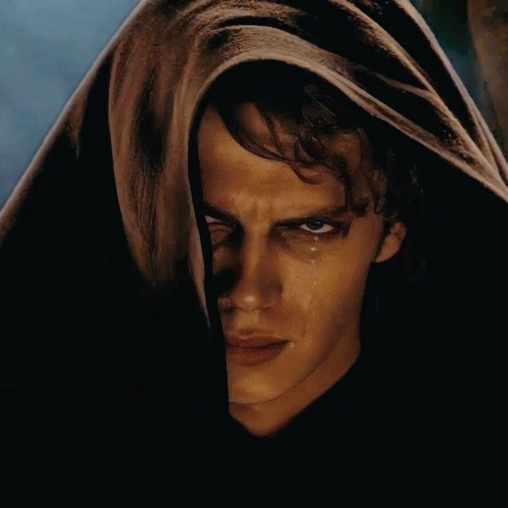

Anakin Skywalker
Um menino escravo que virou o maior Jedi da sua geração, um herói de guerra e, no fim, o homem que escolheu o lado sombrio por medo de perder quem amava.

O menino de Tatooine
Anakin Skywalker cresceu como escravo em Tatooine ao lado de sua mãe, Shmi Skywalker. Desde cedo, demonstrava uma inteligência e habilidades incomuns, mas também desenvolveu fortes laços emocionais com as pessoas que amava.
Quando começou seu treinamento Jedi, Anakin já era considerado velho para se tornar um Padawan. Diferente da maioria dos jovens treinados desde crianças, ele carregava memórias, medos e sentimentos profundos, principalmente após ser obrigado a deixar sua mãe para trás.
Os Jedi acreditavam que o apego poderia levar ao medo e ao lado sombrio. Anakin nunca conseguiu abandonar completamente seus sentimentos, e justamente o medo de perder as pessoas que amava se tornaria uma das partes mais importantes de sua história.

O Jedi e o herói de guerra
A ligação de Anakin com sua mãe nunca desapareceu. Quando teve visões e percebeu que Shmi estava em perigo, seu medo de perdê-la falou mais alto. Após encontrá-la e vê-la morrer em seus braços, Anakin foi dominado pela raiva e pela dor, realizando um dos primeiros atos que mostraram sua aproximação com o lado sombrio.
Ao mesmo tempo, seus sentimentos por Padmé Amidala se tornavam cada vez mais fortes. Mesmo sabendo que o romance era proibido pelo Código Jedi, Anakin escolheu se casar secretamente com ela, criando uma relação baseada em um amor profundo, mas também no medo constante de perdê-la.
Essas duas experiências reforçaram o maior conflito de Anakin: seu enorme amor pelas pessoas próximas também alimentava seu medo, sua raiva e sua necessidade de controlar aquilo que não podia perder. Aos poucos, esses sentimentos começaram a abrir espaço para o lado sombrio.

A queda
As visões sobre a possível morte de Padmé fizeram Anakin reviver o trauma que havia sentido ao perder sua mãe. Dominado pelo medo de perder novamente alguém que amava, ele passou a buscar qualquer forma de impedir que seu futuro se repetisse.
Ao mesmo tempo, Anakin acumulava descontentamentos com a Ordem Jedi. Ele se sentia incompreendido, pouco reconhecido e limitado por um Código que o obrigava a reprimir seus sentimentos e aceitar perdas que ele não conseguia suportar.
Entre suas emoções, suas visões e a manipulação de Palpatine, Anakin começou a acreditar que o lado sombrio poderia lhe dar o poder e a liberdade que os Jedi negavam. Sua queda não aconteceu por uma única decisão, mas pelo acúmulo de medo, frustração e apego que, aos poucos, o transformaram em Darth Vader.